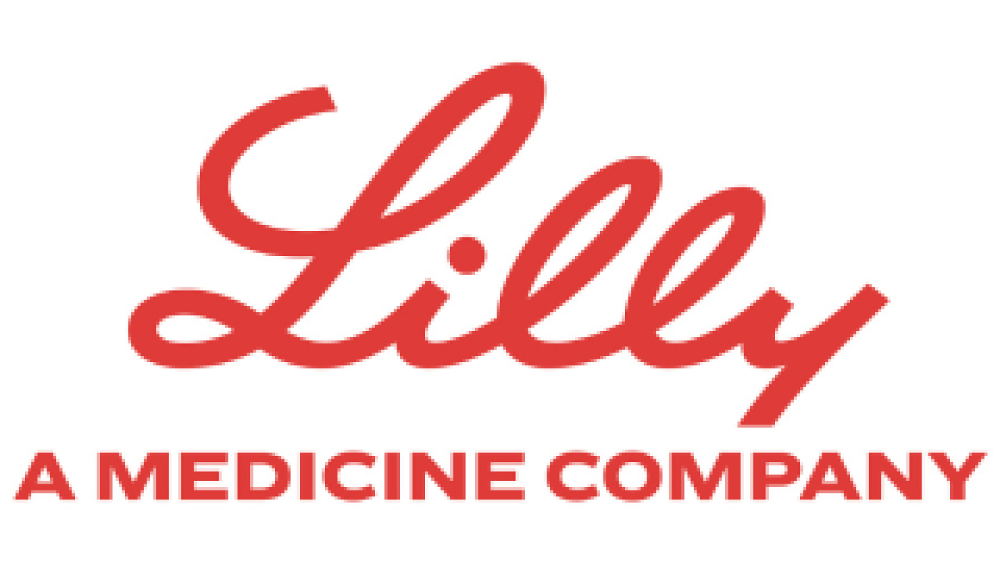
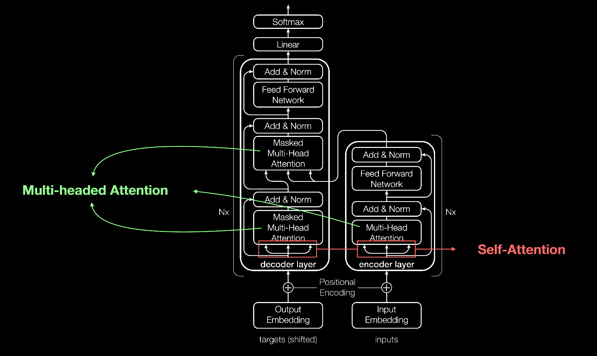
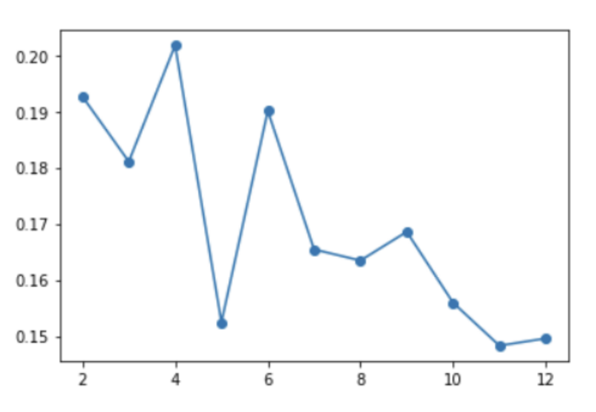
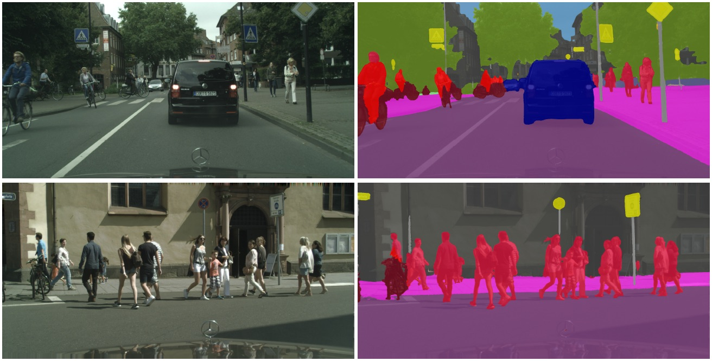
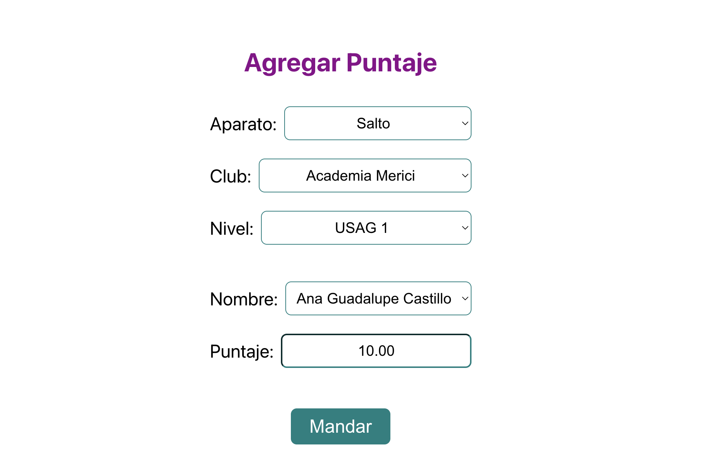
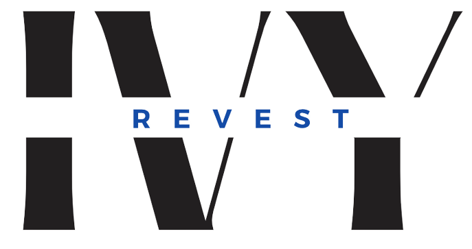

Bachelor of Science in Computer Science
Georgia Institute of Technology, 2022
Key Courses: Data Structures and Algorithms, Design & Analysis of Algorithms, Artificial Intelligence, Database Systems, Systems and Networks, Applied Combinatorics, etc.
I’m a software engineer at Apple. I’m passionate about medicine and understanding the human body and brain. I love using technology and coding to solve problems and make a real difference in people’s lives.
Georgia Institute of Technology, 2022
Key Courses: Data Structures and Algorithms, Design & Analysis of Algorithms, Artificial Intelligence, Database Systems, Systems and Networks, Applied Combinatorics, etc.
Georgia Institute of Technology, 2023
Key Courses: Real-time systems, Machine Learning, Natural Language Processing, Parallelizing compilers, Web search and text mining, etc.
Apple
June 2025 – Present

➤ Developed backend systems, machine learning and full-stack tools supporting global wireless technologies and carrier integration
Indiana University Bloomington - Dr. Amanda Mejia
April 2025 – Present
➤ Developed hierarchical Bayesian models to extract individualized brain networks from fMRI using population-derived priors. ➤ Applied statistical regularization to improve interpretability of functional connectivity across large-scale cortical networks. ➤ Analyzed HCP and MSC datasets to evaluate the reliability of individualized topography for phenotype prediction. ➤ Explored machine learning frameworks for linking functional brain organization to behavioral phenotypes.
Eli Lilly and Company
June 2023 - June 2025

➤ Developed C-based software to model TZP manufacturing operations with dependencies, featuring automatic schedule updatesband real-time data integration, plus a web application for schedule visualization.
➤ Conducted 500+ simulations and used decision trees with Fit Least Squares to identify bottlenecks, optimize thresholds, and improve TZP cycle times.
➤ Developed a predictive model combining linear regression and Gaussian Process Models to reduce IPA sampling frequency, increasing TZP production output by 2.5%.
➤ Built core components of Lilly's centralized AI platform, implementing Named Entity Recognition and API design to enhance embedding, artifact processing, model execution, and response streaming capabilities.
➤ Mapped production processes using XML scripting and Python, enabling automated manufacturing operations.
➤ Developed a Python-based voice-controlling manufacturing assistant, employing Selenium for web automation and Vosk for speech recognition, enhancing manufacturing efficiency.
➤ Designed and delivered a two-month AI training program for 100+ stakeholders.
Uber Technologies Inc.
June 2022 – August 2022
➤ Developed a React-based UI for visualizing critical path analysis of Jaeger traces per service endpoint.
➤ Optimized company-wide operations by analyzing latency profiles and reducing service running costs by an average of 15%.
➤ Integrated GraphQL to connect backend data, enabling dynamic display of various dates, services, and endpoints.
Uber Technologies Inc.
May 2021 – August 2021
➤ Designed and executed a versatile module for historical index backfilling in Uber's LedgerStore, enhancing data accessibility.
➤ Developed a comprehensive job scheduler and data validator to ensure the integrity of entries in Docstore.
➤ Leveraged Golang to efficiently retrieve archived data from Terrablob, constructing index tables for optimized data querying.

Developed a predictive model for Spotify hit songs using GCN, GAT, and Random Forest algorithms, surpassing industry benchmarks with 90.21% accuracy. Incorporated Natural Language Processing techniques, including TF-IDF, to extract valuable features from song lyrics.
View Project Report
Developed a novel masking technique to improve text classifiers' robustness and generalizability by reducing reliance on dataset-specific keywords, achieving significant accuracy gains in misinformation detection.
View Project Report
Developed predictive models to assess Type 2 diabetes risk using Pima Indians dataset. Implemented clustering techniques for risk stratification and applied supervised learning methods like logistic regression and neural networks for accurate risk prediction.
View Project Report
Built and optimized cutting-edge machine learning models for multimedia analysis, including image segmentation, object detection, and speech recognition. Delivered a scalable, Docker-based deployment system for efficient and flexible cloud-based model execution.

Implemented the first digital and automated scoring system for all gymnastics competitions in Venezuela. Developed the system using JavaScript and WebSockets for real-time communication and live updates. Implemented multiple display screens for real-time results, calculated positions, total scores, and rankings.
Credentials: Username: test@gmail.com Password: test123
Visit webpage
Founded and developed an e-commerce web application aimed at selling wall and floor decor in the Venezuelan market. Utilized a PERN stack (PostgreSQL, Express, React, Node.js), augmented by Firebase for secure user authentication, real-time updates, and deployment on AWS.
Visit webpageI grew up in Caracas, Venezuela, where I dedicated most of my childhood to competitive gymnastics. This experience taught me discipline, resilience, and a sharp attention to detail, qualities that have shaped my approach to life and learning. Gymnastics also fueled my curiosity about the human body and health, sparking a deep interest in medicine from a young age.
In 2016, I attended the Georgia Tech Language Institute and fell in love with the campus and its community. After graduating high school in Venezuela, I returned to Atlanta in 2018 to begin my undergraduate studies at Georgia Tech. My initial goal was to study biology and eventually go to medical school, as I believed that was the best path to impact people’s health. Later, I transitioned to biomedical engineering, which combined my passion for medicine with my love for physics, math, and problem-solving. However, after taking my first programming class, I discovered an entirely new passion. Programming opened up a world of limitless possibilities, and I quickly became fascinated by its potential to solve complex challenges. This led me to switch my major once again, ultimately earning a Bachelor of Science in Computer Science in 2022.
After completing my bachelor’s, I continued my journey at Georgia Tech with a master’s degree in machine learning. This field intrigued me because, while it’s cutting-edge and innovative, it’s often seen as a black box. I was determined to understand the math and theory behind machine learning algorithms and apply them to solve real-world problems, particularly in healthcare. The constant advancements in technology have only strengthened my resolve to stay at the forefront of this field, as I believe it holds the key to the future. Upon graduation, I moved to Indianapolis to work for Eli Lilly, where I’m now fulfilling my dream of helping people through medical innovation and technology.
My curiosity has always extended beyond technology itself - I’ve long been fascinated by the complexity of the human brain and how it enables us to think, feel, and process emotions. With the rise of AI, I’m especially interested in the intersection between AI and neuroscience. Bridging the gap between artificial intelligence and our understanding of the human mind not only excites me but feels essential to advancing both fields. I’m eager to push the boundaries of machine learning and neuroscience, exploring how we can enhance both AI systems and our understanding of human cognition.